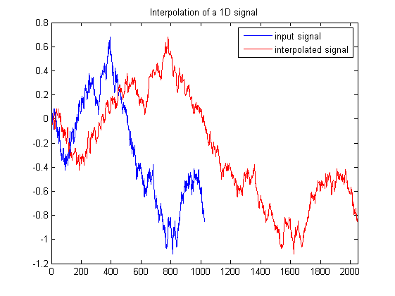

| FRACLAB Functions |
|
Computes the interpolation of a 1D signal
XI = fracinterp1d(x,NI)
XI = fracinterp1d(...,'Propertyname',Propertyvalue)
XI = fracinterp1d(x,NI) Computes the interpolated signal, XI, of the input signal, x, using a specific number of interpolation, NI and a Triangle biorthonormal quadrature mirror filter. Beware, if the number of interpolations is NI > 3 the process will take a long time.
XI = fracinterp1d(...,'Propertyname',Propertyvalue) Computes the denoised signal, XI, applying the specified property settings. The property setting can be choosen from the list below :
| Property | Purpose |
|---|---|
| 'levels' |
The XI is computed with specific [START, END] levels vector. The parameters START and END are positive integers that specify the minimum and maximum scales which are used to compute the interpolation. The START value must be at least equal to 2 and the END level must be lower than log2 of the length input signal. If 'levels' is not specified, the default vector is [START,END] = [2,log2(length(X))]. |
N = 1024; H = 0.5;
x = fbmwoodchan(N,H);
y = fracinterp1d(x,1,'levels',[2,10]);
figure; plot(x); hold on; plot(y,'r');
title('Interpolation of a 1D signal');
xlim([0 length(y)]); legend('input signal','interpolated signal');

| |
fl_regression | fracinterp2d | |